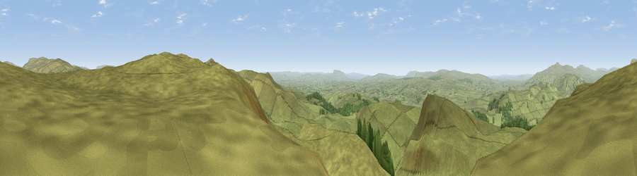

Viewpoint near Langcliffe
#4535 in England · top 5% of its area beats it · near LangcliffeThe view, rendered

A 360° render of this exact spot computed from the terrain model, tree cover and land cover — summer colours, afternoon light, calibrated against photographs of famous viewpoints. Real trees, hedges and buildings will differ in detail.
The panorama
Grey silhouette: terrain skyline in each direction (720 bearings, Earth curvature and refraction included). Dashed green: skyline with trees (+15 m) and buildings (+8 m) as obstacles. Blue strip: how far the ground is visible on each bearing.
Where the view opens
Wedge length = distance to the farthest visible ground on that bearing (vegetation-aware). Rings at 10, 25 and 50 km.
What fills the view
97% grassland · 3% woodland
Angular shares of the visible panorama (visual magnitude), not map area. Landscape diversity 0.07 (0–1 Shannon).
Key numbers
More beautiful places nearby
The staircase of upgrades: each row has a higher view potential than everything closer. Driving times are estimates from straight-line distance, calibrated against real road routing — check an actual route before setting out.
| Place | Direction | Drive | Score |
|---|---|---|---|
| Viewpoint near Langcliffe | NNW · 0 km | ~1 min | 73.1 |
| Warrendale Knotts | WSW · 1 km | ~3 min | 73.7 |
| Rye Loaf Hill | ESE · 3 km | ~7 min | 73.9 |
| Kirkby Fell | ESE · 3 km | ~8 min | 74.5 |
| Pen-y-ghent | N · 9 km | ~18 min | 75.8 |
| Little Ingleborough | NW · 13 km | ~24 min | 78.8 |
| Viewpoint near Ingleton | NW · 14 km | ~26 min | 79.5 |
| Whernside | NNW · 20 km | ~34 min | 79.9 |
54.07730, -2.24412 · source: screening · position refined by local search. Computed location — check access rights before visiting.